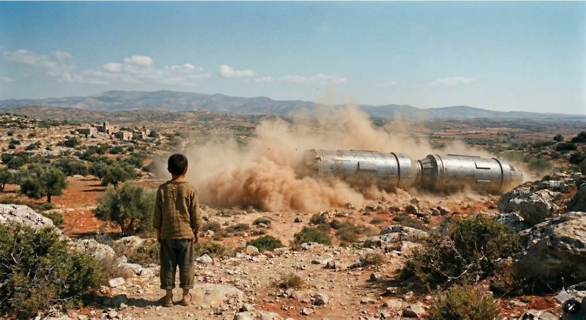
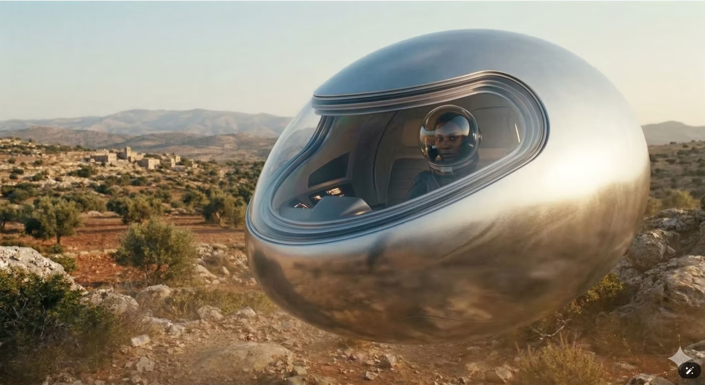
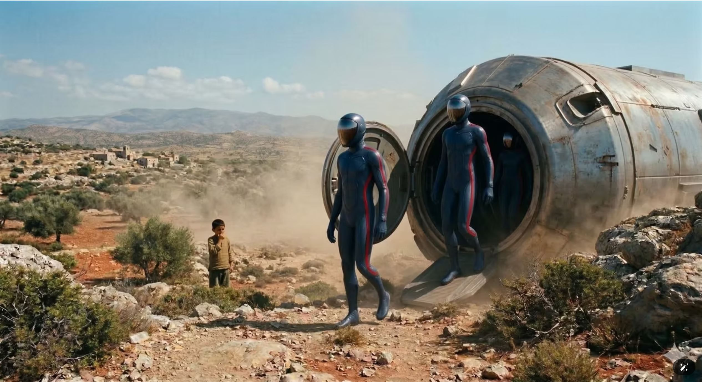
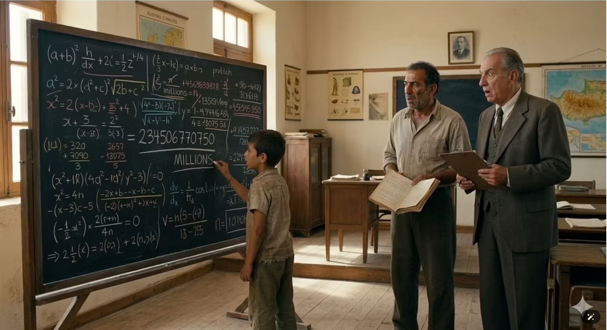

Description Περιγραφή
This report records in detail the events that took place in the Marathounta area of Paphos between 1945 and 1947, as set out in the remarkable testimony of Dionysios. The story begins one afternoon when the witness, aged only eleven, was in the family fields watching the animals.
The calm of the rural landscape was suddenly broken by the appearance of an object that tore through the sky at dizzying speed, coming from the north. Dionysios describes the craft as two metallic barrels joined together, emitting an intense glow. On impact with the ground, the object raised a huge cloud of dust and smoke, causing awe and fear in the child watching from a short distance.
From the interior of the craft emerged three or four humanoid entities wearing close-fitting suits in deep blue. A distinctive detail of their clothing was a strong red stripe running along the side of the suit from shoulder to feet.
The witness describes a state of complete paralysis or hypnosis, in which he lost all sense of time. What seemed to him like only a few minutes was in reality an entire night, during which he remained missing. His mother found him the following morning in a state of confusion, with a dark brown and blue mark on his body — on his hip — that had not been there before. Due to the religious beliefs of the time, the local community interpreted the event as demonic possession, and the child was taken to the church for rites of purification.
About a month after the first incident, a second encounter took place, more interactive and more decisive than the first. This time the craft was egg-shaped, silver, and hovered silently above the ground without the use of propellers. One of the occupants — wearing a transparent helmet that looked like a glass sphere — approached Dionysios and spoke to him in the Cypriot dialect, urging him not to be afraid. In a gesture that sealed the contact, the stranger asked the child for his tsakkoudi, the traditional folding knife he carried. Dionysios handed it over, and the stranger promised that in return he would open his mind and make him the most intelligent man alive — assuring him that he would never again need to fear anything in his life.
The transformation that followed in the days after was astonishing to those around him. Dionysios, who until then had received no real education and was considered a simple child of the countryside, suddenly acquired extraordinary mental abilities. He began to perform complex mathematical calculations with numbers in the millions in his head within seconds, surpassing even his teacher in speed. At the same time he developed a remarkable photographic memory that allowed him to memorise whole history books after a single reading. The school inspector who was called to examine him was left speechless by the details the child could recall, describing him as a rare genius.
This event was not only a personal experience — it was later linked to broader reports of unidentified object activity in the Paphos area, which were recorded even in declassified documents of foreign intelligence services.
Dionysios himself, in his recorded testimony, maintains to the end that these entities were friendly and that their intervention gave him the gift of knowledge, which helped him become a successful man. His story remains one of the most documented cases in Cyprus in which a close encounter led to a permanent and measurable enhancement of human mental abilities.
Η παρούσα αναφορά καταγράφει με λεπτομέρεια τα γεγονότα που έλαβαν χώρα στην περιοχή της Μαραθούντας στην Πάφο κατά την περίοδο 1945 έως 1947, όπως αυτά παρατίθενται στη συγκλονιστική μαρτυρία του Διονύσιου. Το χρονικό ξεκινά ένα απόγευμα όταν ο μάρτυρας, σε ηλικία μόλις έντεκα ετών, βρισκόταν στα χωράφια της οικογένειάς του για να επιβλέπει τα ζώα.
Η ηρεμία του αγροτικού τοπίου διακόπηκε απότομα από την εμφάνιση ενός αντικειμένου που έσχισε τον ουρανό με ιλιγγιώδη ταχύτητα, ερχόμενο από τον Βορρά. Ο Διονύσιος περιγράφει το σκάφος ως δύο μεταλλικά βαρέλια ενωμένα μεταξύ τους, τα οποία εξέπεμπαν μια έντονη λάμψη. Κατά την πρόσκρουσή του στο έδαφος, το αντικείμενο σήκωσε ένα τεράστιο σύννεφο σκόνης και καπνού, προκαλώντας δέος και φόβο στο παιδί που παρακολουθούσε από μικρή απόσταση.
Από το εσωτερικό του σκάφους εξήλθαν τρεις ή τέσσερις ανθρωπόμορφες οντότητες οι οποίες φορούσαν εφαρμοστές στολές σε βαθύ μπλε χρώμα. Χαρακτηριστική λεπτομέρεια της ενδυμασίας τους ήταν μια έντονη κόκκινη ρίγα που διέτρεχε το πλάι της στολής από τον ώμο έως τα πόδια.
Ο μάρτυρας περιγράφει μια κατάσταση απόλυτης παράλυσης ή ύπνωσης, κατά την οποία έχασε την αίσθηση του χρόνου. Ενώ για τον ίδιο φάνηκε πως πέρασαν ελάχιστα λεπτά, στην πραγματικότητα παρέμεινε αγνοούμενος για ολόκληρη τη νύχτα. Η μητέρα του τον εντόπισε το επόμενο πρωί σε κατάσταση σύγχυσης, ενώ στο σώμα του, συγκεκριμένα στην περιοχή του ισχίου, είχε εμφανιστεί ένα σκούρο καφέ και μπλε σημάδι που δεν προϋπήρχε. Λόγω των θρησκευτικών πεποιθήσεων της εποχής, η τοπική κοινωνία ερμήνευσε το γεγονός ως δαιμονισμό, οδηγώντας το παιδί στην εκκλησία για τελετές εξαγνισμού.
Περίπου ένα μήνα μετά το πρώτο περιστατικό, έλαβε χώρα μια δεύτερη συνάντηση η οποία υπήρξε πιο διαδραστική και καθοριστική. Αυτή τη φορά το σκάφος είχε σχήμα αυγού, ήταν ασημένιο και αιωρούνταν σιωπηλά πάνω από το έδαφος χωρίς τη χρήση ελίκων. Ένας από τους επιβάτες, ο οποίος φορούσε ένα διάφανο κράνος που έμοιαζε με γυάλινη σφαίρα, πλησίασε τον Διονύσιο και του μίλησε στην κυπριακή διάλεκτο, προτρέποντάς τον να μην φοβάται. Σε μια κίνηση που σφράγισε την επαφή, ο ξένος ζήτησε από το παιδί το τσακκούδι του, το παραδοσιακό αναδιπλούμενο μαχαίρι που έφερε μαζί του. Ο Διονύσιος το παρέδωσε και ο ξένος του υποσχέθηκε πως ως αντάλλαγμα θα του άνοιγε το μυαλό και θα τον έκανε τον πιο έξυπνο άνθρωπο, διαβεβαιώνοντάς τον πως δεν θα χρειαζόταν ποτέ ξανά να φοβηθεί τίποτα στη ζωή του.
Η μεταμόρφωση που ακολούθησε τις επόμενες ημέρες υπήρξε συγκλονιστική για το περιβάλλον του παιδιού. Ο Διονύσιος, ο οποίος μέχρι τότε δεν είχε λάβει ουσιαστική μόρφωση και θεωρούνταν ένα απλό παιδί της υπαίθρου, απέκτησε ξαφνικά υπερφυσικές πνευματικές ικανότητες. Άρχισε να εκτελεί στο μυαλό του σύνθετες μαθηματικές πράξεις με αριθμούς εκατομμυρίων μέσα σε ελάχιστα δευτερόλεπτα, ξεπερνώντας σε ταχύτητα ακόμα και τον δάσκαλό του. Παράλληλα, ανέπτυξε μια εκπληκτική φωτογραφική μνήμη που του επέτρεπε να αποστηθίζει ολόκληρα βιβλία ιστορίας μετά από μία και μόνο ανάγνωση. Ο σχολικός επιθεωρητής που κλήθηκε να τον εξετάσει έμεινε άφωνος από τις λεπτομέρειες που μπορούσε να ανακαλέσει το παιδί, χαρακτηρίζοντάς τον ως μια σπάνια ιδιοφυΐα.
Το γεγονός αυτό δεν παρέμεινε μόνο μια προσωπική εμπειρία, καθώς συνδέθηκε αργότερα με ευρύτερες αναφορές για δραστηριότητα αγνώστου ταυτότητας αντικειμένων στην περιοχή της Πάφου, οι οποίες καταγράφηκαν ακόμα και σε αποχαρακτηρισμένα έγγραφα ξένων υπηρεσιών πληροφοριών.
Ο ίδιος ο Διονύσιος, μέσα από την ηχογραφημένη μαρτυρία του, διατηρεί μέχρι τέλους τη θέση ότι οι οντότητες αυτές ήταν φιλικές και πως η παρέμβασή τους του χάρισε το δώρο της γνώσης, το οποίο τον βοήθησε να εξελιχθεί σε έναν επιτυχημένο άνθρωπο. Η ιστορία του παραμένει μια από τις πιο τεκμηριωμένες περιπτώσεις στην Κύπρο όπου μια στενή επαφή οδήγησε σε μόνιμη και μετρήσιμη αναβάθμιση των ανθρώπινων νοητικών ικανοτήτων.
Source Material Πηγαίο Υλικό




Source: Dr. Georgios Florides, UAP Cyprus. A digitised interview with the witness is held in the centre's archive. Πηγή: Δρ. Γεώργιος Φλωρίδης, UAP Cyprus. Στο αρχείο υπάρχει ψηφιοποιημένη η συνέντευξη του μάρτυρα.
Notes Σημειώσεις
This case remains under investigation. It is one of the most detailed CE3 reports from Cyprus, notable for the reported permanent enhancement of the witness's cognitive abilities following the encounter. If you witnessed these events or hold additional documentation, please contact us via the Report a UAP form. Η υπόθεση παραμένει υπό διερεύνηση. Πρόκειται για μία από τις πιο λεπτομερείς αναφορές CE3 από την Κύπρο, αξιοσημείωτη για τη φερόμενη μόνιμη αναβάθμιση των νοητικών ικανοτήτων του μάρτυρα μετά τη συνάντηση. Εάν υπήρξατε μάρτυρας αυτών των γεγονότων ή διαθέτετε πρόσθετη τεκμηρίωση, παρακαλούμε επικοινωνήστε μαζί μας μέσω της φόρμας Αναφέρετε UAP.